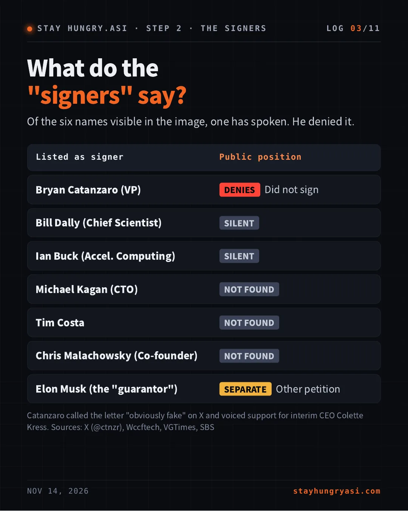
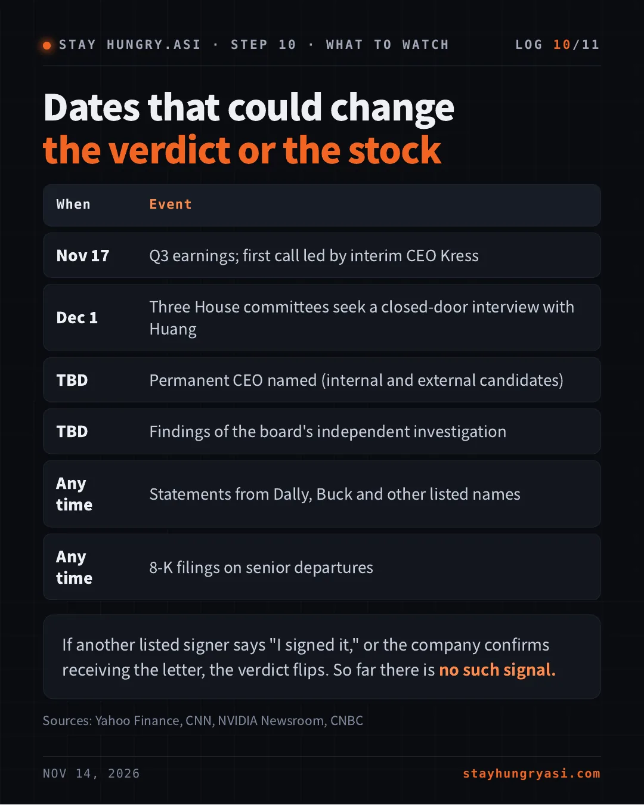

Data as of November 14, 2026 (Korea time), US close of Nov 13 · stayhungryasi.com
Conventions: figures and statements are facts as reported by the sources. The '97% confidence' is the author's subjective judgment. Items that could not be confirmed are marked as not found or unverified. A recheck at 22:00 on Nov 14 (Korea time) found no public statement from any listed name other than Catanzaro. Not investment advice.
The key points in 11 cards. Tap an image to enlarge it.
One personal X account. Not a company channel.
About seven hours before, the same account had floated this exact scenario: Huang winning his job back "like Sam did," according to a fact-check report.
The letter appears nowhere in Nvidia's newsroom or its 8-K filing. I found no company statement on it.
Sources: X post, TalkEsport, NVIDIA Newsroom, SEC 8-K
Of the six names visible in the image, one has spoken. He denied it.
| Listed as signer | Public position |
|---|---|
| Bryan Catanzaro (VP) | [DENIES] Did not sign |
| Bill Dally (Chief Scientist) | [SILENT] |
| Ian Buck (Accel. Computing) | [SILENT] |
| Michael Kagan (CTO) | [NOT FOUND] |
| Tim Costa | [NOT FOUND] |
| Chris Malachowsky (Co-founder) | [NOT FOUND] |
| Elon Musk (the "guarantor") | [SEPARATE] Other petition |
Catanzaro called the letter "obviously fake" on X and voiced support for interim CEO Colette Kress. Sources: X (@ctnzr), Wccftech, VGTimes, SBS
Structure and sentences track the letter OpenAI staff sent their board when Sam Altman was removed.
| 2023 OpenAI original | 2026 "Nvidia" version |
|---|---|
| OpenAI | NVIDIA |
| Sam Altman | Jensen Huang |
| New Microsoft unit | SpaceX Terafab |
| Microsoft promised jobs for all | Musk promised jobs for all |
| AI safety and governance work | GPU, CUDA and networking work |
The original was real: 738 of 770 OpenAI employees signed, and Altman was back within days. This version reads like a parody or a fabrication aiming for the same ending.
Sources: SBS, TalkEsport, Wccftech, Wikipedia (OpenAI 2023)
Leftovers from the copied original collide with the public record.
| The letter claims | The record shows |
|---|---|
| The board "terminated" Huang | 8-K: the board accepted his resignation |
| The board gave no basis | Nov 8: independent probe announced |
| Leaders asked the board to quit | No such reporting |
| Huang and Musk lead Terafab | No such announcement |
| Musk guaranteed jobs for all | No such statement found |
Terafab itself is real: a Tesla and SpaceX chip project.
Sources: SEC 8-K (filed Nov 12), NVIDIA Newsroom, Washington Post
Same letter, very different standards.
Wccftech, SBS, TalkEsport, VGTimes, Crypto Briefing
Reported it as fake, citing the denial and the OpenAI match
Interesting Engineering, TokenPost
Described it with a clear caveat on authenticity
The Standard (HK), ChainCatcher
Ran "hundreds signed" as fact
The Washington Post covered only the separate petition Musk signed. I found no major wire service reporting this letter as real.
The platform flagged it. The image kept spreading anyway.
Posts carrying the letter now show a note saying, in substance, that no reports confirm such a signed letter exists.
The public petition at standwithjensen.com is real, and Musk said he is signing it. That site has weak identity checks too, so its name list is not proof either.
Sources: SBS, TalkEsport, Washington Post, Odaily
97% confidence. The other 3%: Dally, Buck and the rest have not spoken yet
| TRUE EVEN THOUGH THE LETTER IS FAKE |
|---|
| Huang resigned; Kress is interim CEO (announced Nov 12) |
| An internal post for his return drew 1,600+ comments (WIRED) |
| Musk backs reinstatement; hiring Huang "would be an honor" |
| CLAIMS FOUND ONLY IN THE LETTER |
|---|
| A signed letter from top executives threatening to quit |
| Musk guaranteeing jobs for every Nvidia employee |
| A "termination" and bad-faith talks by the board |
On Nov 13, the day the letter spread, shares were up about 2% premarket and closed down 2.01%. AMD fell 8.8% and Broadcom 4.9% the same day, so the letter's own effect cannot be isolated.
Talent-flight risk and hopes of a Huang return would both be in the price
No change to fundamentals. What matters: earnings, succession, the probes
Sources: Yahoo Finance, CNBC, Forbes. A fact check, not investment advice.
| When | Event |
|---|---|
| Nov 17 | Q3 earnings; first call led by interim CEO Kress |
| Dec 1 | Three House committees seek a closed-door interview with Huang |
| TBD | Permanent CEO named (internal and external candidates) |
| TBD | Findings of the board's independent investigation |
| Any time | Statements from Dally, Buck and other listed names |
| Any time | 8-K filings on senior departures |
If another listed signer says "I signed it," or the company confirms receiving the letter, the verdict flips. So far there is no such signal.
Sources: Yahoo Finance, CNN, NVIDIA Newsroom, CNBC
Main sources NVIDIA Newsroom · SEC 8-K · X (@ctnzr) · Wccftech · SBS · Washington Post · CNBC · Yahoo Finance · CNN · Forbes · TalkEsport
Personal research based on public reporting. Not investment advice. As of Nov 14, 2026 (KST).